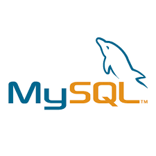
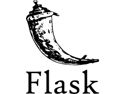
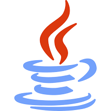
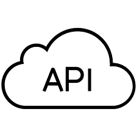
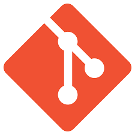
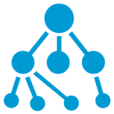
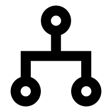
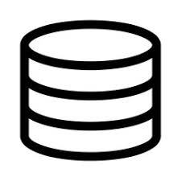
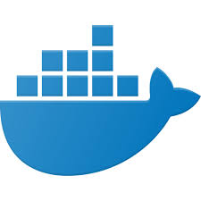

About Me

"Tell me about yourself"
Skills
 Javascript
Javascript HTML5
HTML5 CSS3
CSS3 Bootstrap
Bootstrap jQuery
jQuery- React.js
 Node.js
Node.js Express
Express- MongoDB and Mongoose
-  MySQL and Sequelize
 Python
Python-  Flask
-  Java
 REST
REST-  Building/Consuming APIs
- AWS
-  Git
- Linux
-  Data Structures
-  Algorithms
-  Relational DB Management
- Wordpress
- Kubernetes
-  Docker
Experience
Software Engineer - NASA's Jet Propulsion Laboratory
- Designed, constructed, and implemented a web interface for a shadow recognition program. Started with a buggy Ubuntu desktop app that was very complicated to use, ended with a stable web application that anyone can use. Converted existing research code into functional and intuitive web application based on Flask and Boost.Python
- Part of i2F program, Innovation to Flight, an exclusive and highly selective innovation and development group of interns (12 selected out of over 800 Summer interns)
- Collaborated directly with senior research scientists
Tutor - Santa Monica College
- Employee of my school tutoring fellow students in Chemistry, Math (up to Calculus 2), English, and eight different Computer Science classes
- Conducted group tutoring sessions with up to 10 people at a time
- Coordinated with program staff and professors to deliver highest quality of help to students
Entry Level Site Reliability Engineer - Watchtower World Headquarters
- Implemented Kubernetes clusters with Docker Containers on manually managed AWS EC2 instances via CI/CD
- Researched and implemented disaster recovery options for production clusters
- Generated and distributed markdown/video tutorials on researched findings for AWS and Kubernetes resources
Freelance Web Developer
- Designed and built static websites for clients
- Delivered websites up to clients' standards
- Leveraged Wordpress and built from scratch
Education
UCLA Extension Full Stack Web Development Bootcamp
- Made me a highly skilled developmer in the MERN Stack
- Team Lead for Three Full Stack Web Application Projects
- Also very comfortable with MySql, jQuery, Bootstrap
- Hired on as a Teaching Assistant after the class
Santa Monica College - AA in Computer Programming
- 3.9 GPA overall,4.0 major GPA
-
Officer and Social Media Director of SMC STEM Club (September 2015 – June 2016)
- Planned and led meetings of up to 50 people, coordinated social events and guest speakers
- Built our website from scratch. Collaborated with school faculty to compile a list of helpful links for STEM majors
- Recipient of 5 merit based scholarships, including excellence in STEM, Computer Science, and community service
- Only student invited to participate in annual CS Advisory Board meeting. Discussed better serving the local CS community and offered suggestions from a student’s perspective that ended up being implemented